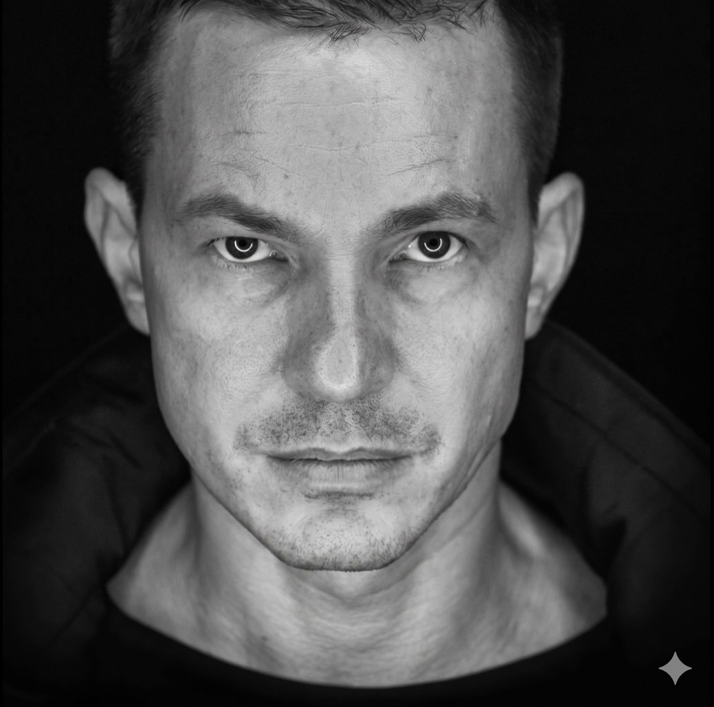

Чоловіча ініціація
«Хто я?» Що таке справжня мужність. Самовизначення, відповідальність, дорослішання — шлях, який не передається у спадок.
Психотерапевт · Наставник · Спеціаліст з екстремальних переговорів · Ветеран ЗСУ
«Ти — не той, хто ти є. Ти — те, що ти робиш».
Глибинна психотерапія на межі — там, де страх, агресія та втрата стають точкою сили. Понад двадцять п'ять років практики. Бізнес. Війна. Реальні люди. Тільки перевірений практичний досвід, а не теорія з підручника.

У точках страху, агресії, втрати й межового досвіду. За освітою — лікар. Закінчив Національний медичний університет імені О. О. Богомольця, навчався в Східноєвропейському гештальт-інституті. Це не «двотижневі курси коучингу», а клінічний фундамент, на якому будується все інше.
24 лютого 2022 року я пішов на фронт у перший день повномасштабного вторгнення. Повернувся, щоб допомагати тим, хто теж повертається — до себе, до родини, до життя. Свого часу я заснував мережу фітнес-клубів IGYM, тому про дисципліну, ризик, гроші та відповідальність я говорю з позиції людини, яка проходила це сама. Психіка, тіло й справа — для мене це єдина система.
«Я не борюся із симптомом. Я допомагаю людині зрозуміти, що за ним стоїть — і повернути собі контроль над власним життям».
Я працюю саме з ними — бо знаю їх зсередини.
«Хто я?» Що таке справжня мужність. Самовизначення, відповідальність, дорослішання — шлях, який не передається у спадок.
Агресія — не «погана» емоція, а частина природи. Замість придушення — дослідження, розуміння й опанування своєї сили.
Чому гроші є — і чому їх немає. Обмежуючі переконання та внутрішні конфлікти, що стоять між вами й достатком.
«Темна тріада», маніпуляції, залежність. Як розпізнати, вийти й відновитися — і як перестати притягувати те саме знову.
Бойовий стрес, ПТСР, дисоціація, страх смерті. Як працює психіка на межі — і як повернути собі ґрунт під ногами.
Повернення до цивільного життя, відновлення стосунків у родині, комунікація з близькими після війни.
Кожна особистість — це триголовий дракон. Три частини, що живуть в одній людині, ведуть між собою війну й одночасно тримають її разом. Зрозуміти їх — означає перестати бути заручником власних реакцій.
Голова про велич, образ і визнання. Дає амбіцію та масштаб — але здатна перетворити життя на нескінченне доведення власної вартості.
Голова про дистанцію, безпеку й внутрішній світ. Дає глибину та незалежність — але вміє ховати людину від близькості й живого контакту.
Голова про тривогу, провину й контроль. Тримає у напрузі та сумнівах — але саме вона відповідає за совість, чутливість і зв'язок з іншими.
Психіка — це система з межами, об'ємом та енергією. У терапії ми не «вбиваємо» жодну з голів. Ми вчимо дракона літати в один бік.
«25 років практики. Війна. Бізнес. Я знаю про страх і агресію не з підручників».
Особиста терапія, робота з родинами військових, виступи та навчальні програми.
Особиста, конфіденційна робота онлайн або очно. Страхи, агресія, стосунки, залежності, екстремальні та межові стани, обмежуючі переконання.
Консультації для дружин і партнерок ветеранів: як говорити, як підтримати, як зберегти стосунки після повернення з фронту. Досвід співпраці з ветеранським простором «Серцевір».
Спікер платформи psyFAQ.online та глибоких ефірів про структуру психіки, агресію й внутрішні конфлікти під час війни.
Спікер навчальної програми HUBZ Psychology — комплексна психологічна допомога військовослужбовцям та їхнім родинам.
Курс «Мужність» — програма чоловічої ініціації. «Чоловічий погляд» — група для жінок про розуміння чоловіків і стосунків. «Чоловіче коло» — чоловіча група саморозвитку та підтримки.
Самовизначення, мужність, страхи, питання «хто я і куди йду».
Психологія грошей, стрес, обмежуючі переконання, ціна рішень.
Нарцисизм, маніпуляції, залежність — розпізнати, вийти, відновитися.
ПТСР, адаптація, агресія, страх — від того, хто був там сам.
Як зберегти стосунки й себе поруч із людиною, що повернулася з війни.
Коли «само не минає», а готових відповідей більше немає.
Індивідуально та конфіденційно, онлайн або очно. Перша зустріч — прояснення вашого запиту й того, як ми працюватимемо далі.
Сесія триває близько 50 хвилин. Вартість залежить від формату роботи — деталі надішлю в особистому повідомленні.
Як вам зручніше. Онлайн-формат працює повноцінно — більшість клієнтів обирають саме його.
Абсолютно. Усе, що звучить у роботі, лишається між нами. Це базова й непорушна умова.
Напишіть мені у Facebook і в двох-трьох реченнях опишіть запит — далі домовимося про зустріч.
Якщо ви дочитали до цього місця — можливо, час перестати справлятися самотужки. Напишіть мені у Facebook: коротко опишіть запит, і ми домовимося про зустріч.
Робота відбувається конфіденційно, онлайн або очно. Вартість і деталі — у приватному повідомленні.